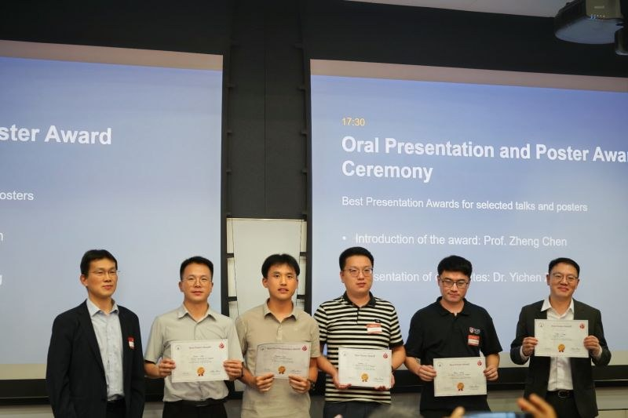

Dr. Hongxun Xiao
National University of Singapore
Picosecond Laser Electronic Excitation Tagging Velocimetry: Toward Combustion and Reacting-Flow Diagnostics
The Best Presentation and Poster Awards recognize outstanding oral presentations and posters at the SSCI Annual Combustion Meeting. Congratulations to all the award winners!
Presented at the Second SSCI Annual Combustion Meeting, held on 16 November 2026 in Singapore. We sincerely thank Prof. Zheng Chen from Peking University for introducing the awards.
National University of Singapore
Picosecond Laser Electronic Excitation Tagging Velocimetry: Toward Combustion and Reacting-Flow Diagnostics
National University of Singapore
Ammonia cracking dynamics and flame response in an integrated catalytic cracker and swirl burner system
National University of Singapore
Laminar Burning Characteristics and Emission Profiles of Premixed Ammonia/Hydrogen Mixtures under Engine-Relevant Conditions
National University of Singapore
Catalysis assisted bluffbody combustion for improved ammonia flame stability and emission control
Cambridge CARES
Machine learning screening of bio-synthetic fuel molecules for sustainable aviation fuel blending

See also the SSCI Young Investigator Award.